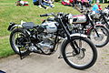
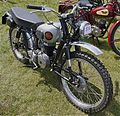
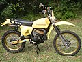

Ендуро
Ендуро ( англ. enduro від лат. indurare - винести, витримати, витерпіти) - дисципліна мотоспорту і велоспорту , що передбачає агресивний стиль їзди бездоріжжям і на спеціалізованих спортивних трасах, начинених колодами, валунами та іншими перешкодами, в залежності від складності змагань. Для цієї дисципліни використовують відповідну спортивну мотоциклетну (велосипедну) техніку. Крім змагання на регулярність руху, в ендуро включено виконання у найкоротший час умов додаткових змагань.
Історія виникнення
Змагання ендуро виросли з випробувань техніки, так званих «endurance run» та «endurance contest» ( фр.
endurance – витривалість). Найперше мотоциклетне випробування було проведено в США 4-5 липня 1902 року,
маршрутом з Бостона до Нью-Йорка. Саме цим випробуванням ми зобов'язані появі надалі поняття «ендуро».
8 липня 1904 р. було засновано Міжнародну федерацію мотоциклетних клубів (ФІКМ), попередницю нинішньої
Міжнародної мотоциклетної федерації (ФІМ) . З ініціативи цієї організації у 1913 році випробування на
поганих проїжджих дорогах були введені у програму перших міжнародних шестиденних мотозмагань під назвою
International Six Day Trial (ISDT) .
У 1981 році слово «ендуро» було офіційно введено у вжиток і тому назва змагань змінилася на The
International Six Day Enduro (ISDE) .
Правила шестиденних змагань
З самого початку, крім особистого заліку змагання, ISDT включали командний залік. Команда могла
використовувати мотоцикли, що виробляються лише у своїй країні; правило було скасовано після Другої світової
війни .
Траса позначалася стрілками. Кожен етап був поділений на ділянки, на яких перевірялася регулярність руху.
Для різних класів мотоциклів було визначено швидкості на дистанції. Також було встановлено певний час
проходження кожного етапу між двома послідовними контрольними точками. При прибутті спортсмена на контрольну
точку за кожну прострочену хвилину нараховувалося по одному штрафному очку. При запізненні більш ніж на 1
годину, при проїзді повз контрольну точку або використання сторонньої допомоги спортсмен дискваліфікувався
(стороння допомога дозволялася лише у разі заправки).
Мотоцикли попередньо оглядалися перед початком змагань, деталі маркувалися та пломбувалися (заміна будь-якої
з цих деталей спричиняла зняття зі змагань). Після закінчення денних етапів доступ до мотоциклів закривався
до ранку.
З часом ФІМ вносила зміни та доповнення до правил змагань. У 1961 році було введено низку змін з метою
підвищення суто спортивного значення змагань та безпеки на маршруті. Число спеціальних випробувань
збільшилося до 11, у тому числі: два види випробувань на прискорення та гальмування, два — на прискорення зі
ковзним фінішем, три гонки в гору, три — по пересіченій місцевості і вже відомі раніше годинні перегони.
Пізніше у змагання запровадили швидкісні ділянки. Шестиденні змагання ускладнювалися і далі, припускаючи
використання техніки в різних дорожніх умовах (насамперед важкого бездоріжжя).
Мотоцикли для ендуро
У перших шестиденних змаганнях брали участь ентузіасти та любителі, використовувалися серійні дорожні мотоцикли, на яких, як правило, було встановлено потужний чотиритактний двигун із газорозподілом нижніми клапанами. Мотоцикли мали потужне провідне колесо та підресорену передню вилку. У перших шестиденних змаганнях у 1913 р. до категорії мотоциклів було віднесено і трицикли .У командному заліку зазвичай брали участь два мотоцикли-одиначки і один мотоцикл з коляскою . У змаганнях 1921 р. в Італії вперше взяли участь у гонці моторолери в одному класі з мотоциклами відповідних робочих об'ємів .
З часом змінювався регламент змагань ендуро — змінювалася й техніка для ендуро, на яку стали пред'являтися ширші вимоги, щоб було можливість справлятися з різноманітними дорожніми умовами протягом усього змагання .
  
Таким чином, зовнішній вигляд мотоциклів для ендуро в порівнянні з дорожніми придбав такі характеристики:
- Велике переднє колесо (зазвичай діаметром 21 дюйм) і широке кермо дозволяють легше контролювати мотоцикл на нерівних поверхнях.
- Спицьовані колеса - ремонтопридатні, можуть витримувати значні деформації при сильних ударах, які неминучі в гонці, а також важать менше литих.
- Високе кріплення переднього грязьового щитка - не дозволяє бруду забивати простір між собою та колесом.
- Розвинені ґрунтозачепи протектора шин дозволяють пересуватися поза дорогами загального користування.
- Ланцюгова передача - має хорошу амортизаційну здатність, спрощує зміну передатного відношення шляхом заміни однієї зі зірочок, крім того, ланцюг мало важить.
На відміну від кросових , мотоцикли для ендуро, як і дорожні, мають комплект світлотехніки, дзеркал, засоби
навігації та державні реєстраційні знаки (тобто мають ПТС та підлягають реєстрації в ДІБДР ), що обумовлено
тим, що змагання ендуро проходять у тому числі і з дороги загального користування.
Слід також відрізняти мотоцикли для ендуро від мотоциклів подвійного призначення , що випускаються у
стилістиці ендуро. Якщо перші за технічними характеристиками призначені для змагань, то другі - це цивільна
техніка, розрахована на утилітарне, а не спортивне використання .
Сучасні мотоцикли для ендуро характеризуються таким:
- Мала маса двигуна, низький рівень шуму, порівняно невеликі вібрації, поряд із надійністю та тяговою характеристикою. Найкраща тяга – на низьких та середніх оборотах. При цьому швидкісна характеристика на тих же низьких та середніх оборотах може губитися .
- Конструкція мотоцикла розрахована на падіння, тому пошкодити будь-що, крім дзеркал і важелів, досить складно.
- Шини використовуються тільки камерні , тільки вони придатні для спицьованих коліс [ джерело не вказано 2519 днів ] .
- Рами зазвичай сталеві , далекі від ідеальної жорсткості.
- Підвіска не розрахована на екстремальні стрибки, як у мотокросі , її завдання – давати можливість швидко та безпечно пересуватися по будь-яких нерівностях.
- Класичний двигун ендуро має повітряно-олійне охолодження і так званий « сухий картер ». У ньому олія не накопичується в піддоні, а відкачується в масляний бак насосом, інший насос подає моторне масло в систему змащення. Така конструкція дозволяє двигуну працювати не відчуваючи «олійного голодування», навіть коли мотоцикл перекидається на бік.
Однак, і ці характеристики мають лише загальний описовий характер.
Як мотоциклетна дисципліна, ендуро регламентується спеціальними технічними вимогами до мотоциклів. До цих вимог (залежно від статусу змагання – від міжнародного до аматорського) може бути включено:
- мінімальна маса спортивного мотоцикла, залежно від його класу;
- заборона використання титанових деталей;
- робочий об'єм двигуна в залежності від його класу;
- навантаження на мотоцикл відповідно до мінімальної маси;
- облік допустимого рівня шуму;
- обмеження по найменшій та найбільшій ширині керма;
- певна конструкція та довжина важелів управління;
- певні ходи підвісок мотоцикла;
- певна висота підніжок;
- незалежні один від одного гальма;
- грязьові щитки, що закривають колесо під певним кутом;
- певний розмір шин; профіль шин;
- певне встановлення та кількість номерних табличок, їх розміри та колір, розміри та колір нанесених на них цифр;
- перелік можливих змін, що вносяться до конструкції дорожніх мотоциклів, що допускаються до змагань.
Дисципліни з елементами ендуро
Крос-кантрі
Сторонні спостерігачі можуть плутати два види мотоциклетних гонок - ендуро і крос-кантрі (Cross-Country Rally) , так як обидва види гонок досить тривалі за часом і включають ділянки пересіченої місцевості. Однак, крос-кантрі відрізняється від класичного ендуро відсутністю ділянок, якими гонщики переміщаються як звичайні учасники дорожнього руху . Міжнародна Мотоциклетна Федерація визначає крос-кантрі як самостійну дисципліну мотоспорту . Під егідою ФІМ щорічно проводиться FIM Cross-Country Rallies World Championship .
Бахи
Бахи (bajas) - одно-або дводенні перегони на дистанціях від 300 до 1000 км по різноманітному рельєфу, покликані показати витривалість гонщиків та їх мотоциклів. FIM щороку проводить The FIM Bajas World Cup . В Америці найвідоміші бахи - Baja 1000 (англ.)рус.та Baja 500 (англ.)рус., що проводяться в Мексиці.
Ралі-рейди
Ралі-рейди (rally raids) - гонки, що проводяться в кілька днів і включають елементи ендуро, крос-кантрі, тріалу та інших дисциплін мотоспорту. Найпопулярнішим ралі-рейдом протягом останніх десятиліть є легендарні перегони «Париж-Дакар» (Dakar Rally).
Ендуро-крос
Ендуро-крос (Endurocross, Indoor Enduro, Enduro-X або EX) - дисципліна, що з'явилася в 2000 році як гібрид суперкросу, тріалу та ендуро. Змагання проводяться на закритому стадіоні, траса включає різні перешкоди природного характеру (наприклад, камені, валуни, колоди, пісок, бруд, воду), а також спеціальні перешкоди (наприклад, великогабаритні шини).
Hard Ендуро
Екстремальне ендуро (Extreme Enduro або Hard Enduro) - окремий напрямок, описати який можна як "людина і машина, що підкорюють найважчі ландшафти планети". Найвідоміші світові змагання - це The Erzbergrodeo (Австрія), The Red Bull Romaniacs (Румунія), The Hell's Gate (Італія), The Tough One (Великобританія) та The Roof of Africa (Південна Африка). У 2011 році пройшов World Xtreme Enduro Championship (WXEC Tour) - чемпіонат світу, який був регламентований п'ятьма основними світовими організаторами змагань з Екстремального Ендуро.
Ендуро-спринт
Ендуро-спринт (Sprint Enduro) - проста і доступна форма змагань, що є одним спеціальним заїздом по 7-8 кіл у
кожному раунді серії. Відрізняється від традиційного ендуро відсутністю хронометражу. Для участі в
ендуро-спринті допускаються як мотоцикли для ендуро, так і кросові. Так як траса не включає дороги
загального користування, то від мотоциклів не потрібно мати комплект світлотехніки, дзеркал, засобів
навігації та державних реєстраційних знаків.
Траса може бути різними видами ділянок пересіченої місцевості — трав'янистими, лісовими, заїздом на пагорб
та ін. Учасники стартують з 20-30 секундним інтервалом. Після завершення кола кожен учасник повертається до
зони очікування. Як тільки завершує коло останній учасник - перший починає наступне коло.
Перший чемпіонат Європи з ендуро-спринту проводиться з 2010 р. у Великій Британії .
Вищенаведений текст - це інформація з вікіпедії - ну чисто щоб не використовувати в статті тільки текст "рибу / lorem")))
Тепер "погнали"!!!
h1 - заголовок 1-го рівня - найважливіший, лише один на сторінку!
h2 - заголовок 2-го рівня, може бути декілька на сторінці, відповідно нижчий рівнем важливості ніж 1
h3 - заголовок 3-го рівня, може бути декілька на сторінці, відповідно нижчий рівнем важливості ніж 2
h4 - заголовок 4-го рівня, може бути декілька на сторінці, відповідно нижчий рівнем важливості ніж 3
h5 - заголовок 5-го рівня, може бути декілька на сторінці, відповідно нижчий рівнем важливості ніж 4
h6 - заголовок 6-го рівня, може бути декілька на сторінці, відповідно нижчий рівнем важливості ніж 5
p - параграф тексту...грубо говорячи текст, текст під заголовком, доречі який можна так би мовити обрізати у потрібному місці - тегом br )))
- Lorem, ipsum dolor.
- Lorem, ipsum dolor.
-
- Lorem, ipsum dolor.
- Lorem, ipsum dolor.
- Lorem, ipsum dolor.
- Lorem, ipsum dolor.
- Lorem, ipsum dolor.
- Lorem, ipsum dolor.
-
- Lorem, ipsum dolor.
- Lorem, ipsum dolor.
- Lorem, ipsum dolor.
- Lorem, ipsum dolor.